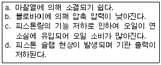
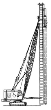

굴삭기운전기능사 (2008-07-13 기출문제)
1. 엔진 오일량 점검에서 오일게이지에 상한선(Full)과 하한선(Low) 표시가 되어 있을 때 가장 적합한 것은?
- Low 표시에 있어야 한다.
- Low와 Full 표시 사이에서 Low에 가까이 있으면 좋다.
- Low와 Full 표시 사이에서 Full에 가까이 있으면 좋다.
- Full 표시 이상이 되어야 한다.
(정답률: 88%)

2. 과급기(Turbo charge)에 대한 설명 중 옳은 것은?
- 피스톤의 흡입력에 의해 임펠러가 회전한다.
- 가솔린 기관에만 설치된다.
- 연료 분사량을 증대시킨다.
- 실린더 내의 흡입 공기량을 증가시킨다.
(정답률: 64%)
3. 다음 보기에서 피스톤과 실린더 벽 사이의 간극이 클 때 미치는 영향을 모두 나타낸 것은?

- a, b, c
- c, d
- b, c, d
- a, b, c, d
(정답률: 62%)
4. 디젤 연료장치에서 공기를 빼는 부분이 아닌 것은?
- 노즐 상단의 피팅 부분
- 분사펌프의 에어블리드 스쿠루
- 연료여과기의 벤트 플러그
- 연료탱크의 드레인 플러그
(정답률: 56%)
5. 기관에서 크랭크축의 역할은?
- 원활한 직선운동을 하는 장치이다.
- 기고나의 진동을 줄이는 장치이다.
- 직선운동을 회전운동으로 변환시키는 장치이다.
- 원운동을 직선운동으로 변환시키는 장치이다.
(정답률: 82%)
6. 고속 디젤기관의 장점으로 틀린 것은?
- 열효율이 가솔린 기관보다 높다.
- 인화점이 높은 경유를 사용하므로 취급이 용이하다.
- 가솔린 기관보다 최고 회전수가 빠르다.
- 연료 소비량이 가솔린 기관보다 적다.
(정답률: 73%)
7. 기관에 사용되는 오일여과기에 대한 사항으로 틀린 것은?
- 여과기가 막히면 유압이 높아진다.
- 엘리먼트 청소는 압축공기를 사용한다.
- 여과능력이 불량하면 부품의 마모가 빠르다.
- 작업조건이 나쁘면 교환 시기를 빨리한다.
(정답률: 50%)
8. 다음 중 착화성이 가장 좋은 연료는?
- 가솔린
- 경유
- 등유
- 중유
(정답률: 52%)
9. 기관에서 배기상태가 불량하여 배압이 높을 때 생기는 현상과 관련 없는 것은
- 기관이 과열된다.
- 냉각수 온도가 내려간다.
- 기관의 출력이 감소한다.
- 피스톤의 운동을 방해한다.
(정답률: 69%)
10. 엔진의 시동 전에 해야 할 가장 일반적인 점검 사항은?
- 실린더의 오염도
- 충전장치
- 유압계의 지침
- 엔진 오일량과 냉각수량
(정답률: 82%)
11. 기관과열시 일어날 수 있는 현상은?
- 연료가 응결될 수 있다.
- 실린더 헤드 변형이 발생될 수 있다.
- 흡입효율이 좋아진다.
- 열효율이 좋아진다.
(정답률: 82%)
12. 기관에서 워터펌프의 역할로 맞는 것은?
- 정온기 고장시 자동으로 작동하는 펌프이다.
- 기관의 냉각수 온도를 일정하게 유지한다.
- 기관의 냉각수를 순환시킨다.
- 냉각수 수온을 자동으로 조절한다.
(정답률: 66%)
13. 건설기계에서 사용하는 납산 배터리 취급상 적절하지 않은 것은?
- 자연 소모된 전해액은 증류수로 보충한다.
- 과방전은 축전지의 충전을 위해 필요하다.
- 사용하지 않은 축전지도 2주에 1회 정도 보충전한다.
- 필요시 급속 충전시켜 사용할 수 있다.
(정답률: 59%)
14. AC발전기 작동 중 소음발생의 원인으로 가장 거리가 먼 것은?
- 베어링이 손상되었다.
- 벨트 장력이 약하다.
- 고정 볼트가 풀렸다.
- 축전지가 방전되었다.
(정답률: 76%)
15. 건설기계장비의 시동전동기 취급시 주의사항으로 틀린 것은?
- 시동전동기의 연속 사용기간은 3분 정도로 한다.
- 기관의 시동된 상태에서 시동 스위치를 켜서는 안 된다.
- 시동전동기의 회전속도가 규정 이하이면 오랜 시간 연속 회전시켜도 시동되지 않으므로 회전속도에 유의해야 한다.
- 전선 굵기는 규정 이하의 것을 사용하면 안 된다.
(정답률: 55%)
16. 엔진의 정지 상태에서 계기판 전류계의 지침이 정상에서 (-)방향을 지시하고 있다. 그 원인이 아닌 것은?
- 전조등 스위치가 점등위치에서 방전되고 있다.
- 배선에서 누전되고 있다.
- 시동시 엔진 예열장치를 동작시키고 있다.
- 발전기에서 축전지로 충전되고 있다.
(정답률: 56%)
17. 납산 축전지를 충전기로 충전할 때 전해액의 온도가 상승하면 위험한 상황이 될 수 있다. 최대 몇 °C를 넘지 않도록 하여야 하는가?
- 5°C
- 10°C
- 25°C
- 45°C
(정답률: 75%)
18. 전기장치 회로에 사용하는 퓨즈의 재질로 적합한 것은?
- 스틸 합금
- 구리 합금
- 알루미늄 합금
- 납과 주석합금
(정답률: 60%)
19. 지게차 포크를 하강시키는 방법으로 가장 적합한 것은?
- 가속페달을 밟고 리프트레버를 앞으로 민다.
- 가속페달을 밟고 리프트레버를 뒤로 당긴다.
- 가속페달을 밟지 않고 리프트레버를 뒤로 당긴다.
- 가속페달을 밟지 않고 리프트레버를 앞으로 민다.
(정답률: 66%)
20. 그림과 같이 기중기에 부착된 작업 장치는?

- 크림셀
- 백호
- 파일드라이버
- 훅
(정답률: 60%)
21. 무한궤도식 굴삭기의 하부 추진체 동력전달순서로 맞는 것은?
- 기관→컨트롤밸브→센터조인트→유압펌프→주행모터→트랙
- 기관→컨트롤밸브→센터조인트→주행모터→유압펌프→트랙
- 기관→센터조인트→유압펌프→컨트롤밸브→주행모터→트랙
- 기관→유압펌프→컨트롤밸브→센터조인트→주행모터→트랙
(정답률: 50%)
22. 무한궤도식 건설기계에서 주행 불량 현상의 원인이 아닌 것은?
- 한쪽 주행모터의 브레이크 작동이 불량할 때
- 유압펌프의 토출유량이 부족할 때
- 트랙에 오일이 묻었을 때
- 스프로킷이 손상되었을 때
(정답률: 71%)
23. 모터그레이더 앞바퀴 경사장치의 설치 목적으로 맞는 것은?
- 조향력을 작게 한다.
- 견인력을 증가시킨다.
- 완충작용을 한다.
- 회전반경을 적게 한다.
(정답률: 40%)
24. 기관의 플라이휠과 같이 회전하는 부품은?
- 압력판
- 릴리스 베어링
- 클러치 축
- 디스크
(정답률: 40%)
25. 엔진과 직결되어 같은 회전수로 회전하는 토크 컨버터의 구성품은?
- 터빈
- 펌프
- 스테이터
- 변속기 출력축
(정답률: 24%)
26. 타이어에 11.00-20-12PR이란 표시 중 “11.00”이 나타내는 것은?
- 타이어 외경을 인치로 표시한 것
- 타이어 폭을 센티미터로 표시한 것
- 타이어 내경을 인치로 표시한 것
- 타이어 폭을 인치로 표시한 것
(정답률: 50%)
27. 건설기계 조종사 면허를 취소하거나 정지시킬 수 있는 사유에 해당하지 않는 것은?
- 면허를 부정한 방법으로 취득하였음이 밝혀졌을 때
- 면허증을 타인에게 대여한 때
- 조종 중 과실로 중대한 사고를 일으킨 때
- 여행을 목적으로 1개월 이상 해외로 출국하였을 때
(정답률: 84%)
28. 교통정리가 행하여지고 있지 않은 교차로에서 우선순위가 같은 차량이 동시에 교차로에 진입한 때의 우선순위가 맞는 것은?
- 소형 차량이 우선한다.
- 우측도로의 차가 우선한다.
- 좌측도로의 차가 우선한다.
- 중량이 큰 차량이 우선한다.
(정답률: 49%)
29. 건설기계등록번호표의 색칠 기준으로 틀린 것은?
- 자가용 - 녹색판에 흰색 문자
- 영업용 - 주황색 판에 흰색 문자
- 관용 - 흰색판에 검은색 문자
- 수입용 - 적색 판에 흰색 문자
(정답률: 72%)
30. 신호등의 녹색 등화시 차마의 통행방법으로 틀린 것은?
- 차마는 다른 교통에 방해되지 않을 때에 천천히 우회전 할 수 있다.
- 차마는 직진할 수 있다.
- 차마는 비보호 좌회전 표시가 있는 곳에서는 언제든지 좌회전을 할 수 있다.
- 차마는 좌회전을 하여서는 아니 된다.
(정답률: 64%)
31. 앞지르기를 할 수 없는 경우에 해당되는 것은?
- 앞차의 좌측에 다른 차가 나란히 진행하고 있을 때
- 앞차가 우측으로 진로를 변경하고 있을 때
- 앞차가 그 앞차와의 안전거리를 확보하고 있을 때
- 앞차가 양보신호를 하지 않을 때
(정답률: 69%)
32. 안전기준을 초과하는 화물의 적재허가를 받은 자는 그 길이 또는 폭의 양 끝에 몇 cm 이상의 빨간 헝겊으로 된 표지를 달아야 하는가?
- 너비 : 14cm, 길이 : 30cm
- 너비 : 20cm, 길이 : 40cm
- 너비 : 30cm, 길이 : 50cm
- 너비 : 60cm, 길이 : 90cm
(정답률: 60%)
33. 건설기계관리법에 의한 건설기계사업이 아닌 것은?
- 건설기계 대여업
- 건설기계 매매업
- 건설기계 수입업
- 건설기계 폐기업
(정답률: 62%)
34. 건설기계관리법상 건설기계의 종류로 맞는 것은?
- 16종 및 특수건설기계
- 21종(20종 및 특수건설기계)
- 27종(26종 및 특수건설기계)
- 30종(27종 및 특수건설기계)
(정답률: 53%)
35. 건설기계 제동장치 검사시 모든 축의 제동력의 합이 당해 축중(빈차)의 최소 몇 % 이상이어야 하는가?
- 30%
- 40%
- 50%
- 60%
(정답률: 46%)
36. 도로교통법규상 주차금지 장소를 나타낸 것으로 틀린 것은?
- 소방용 방화물통으로부터 5m 이내의 지점
- 화재경보기로부터 3m 이내의 지점
- 전신주로부터 12m 이내의 지점
- 터널 안 및 다리 위
(정답률: 67%)
37. 유압모터의 용량을 나타내는 것은?
- 입구압력(kgf/cm2)당 토크
- 유압작동압력(kgf/cm2)당 토크
- 주입된 동력(HP)
- 체적(cm3)
(정답률: 38%)
38. 다음 중 강압밸브의 사용 용도로 적합한 것은?
- 분기회로에서 2차측 압력을 낮게 사용할 때
- 귀환회로에서 전류압력을 유지하고자 할 때
- 귀환회로에서 잔류압력을 낮게 하고자 할 때
- 공급회로에서 압력을 높게 하고자 할 때
(정답률: 26%)
39. 유압 건설기계의 고압호스가 자주 파열되는 원인으로 적합한 것은?
- 유압펌프의 고속회전
- 오일의 점도저하
- 릴리프 밸브의 설정압력 불량
- 유압모터의 고속회전
(정답률: 56%)
40. 건설기계장비로 작업 중 갑자기 유압상승이 되지 않아 점검하려고 한다. 점검내용으로 적합하지 않은 것은?
- 펌프로부터 유압이 발생되는지 점검
- 오일탱크의 오일량 점검
- 오일이 누출되는지 점검
- 작업장치의 자기탐상법에 의한 균열 점검
(정답률: 81%)
41. 유압유에 점도가 서로 다른 2종류의 오일을 혼합하였을 경우에 대한 설명으로 맞는 것은?
- 오일 첨가제의 좋은 부분만 작동하므로 오히려 더욱 좋다.
- 점도가 달라지나 사용에는 전혀 지장이 없다.
- 혼합은 권장사항이며, 사용에는 전혀 지정이 없다.
- 열화 현상을 촉진시킨다.
(정답률: 77%)
42. 유압제어 밸브의 분류 중 방향제어밸브에 속하지 않는 것은?
- 셔틀 밸브
- 첵 밸브
- 릴리프 밸브
- 디셀러레이션 밸브
(정답률: 45%)
43. 그림과 같은 유압기호는?
- 유압오일
- 차단밸브
- 오일탱크
- 유압실린더
(정답률: 75%)
44. 밀폐된 용기 중에 채워진 유체의 일부에 가해진 압력은 유체의 모든 부분이 그대로의 세기로 전달되는 원리는?
- 파스칼의 원리
- 베르누이의 원리
- 보일샬의 원리
- 아르카메데스의 원리
(정답률: 79%)
45. 유압유의 압력에너지(힘)를 기계적 에너지(일)로 변환시키는 작용을 하는 장치는?
- 유압밸브
- 유압펌프
- 어큐물레이터
- 액추에이터
(정답률: 51%)
46. 펌프의 최고 토출압력, 평균효율이 가장 높아 고압 대출력에 사용하는 유압펌프로 가장 적합한 것은?
- 기어 펌프
- 베인 펌프
- 트로코이드 펌프
- 피스톤 펌프
(정답률: 59%)
47. 수공구 취급시 안전에 관한 사항으로 틀린 것은?
- 해머자루의 해머고정 부분 끝에 쐐기를 박아 사용 중 해머가 빠지지 않도록 한다.
- 렌치 사용시 본인의 몸 쪽으로 당기지 않는다.
- 스크루드라이버 사용시 공작물을 손으로 잡지 않는다.
- 스크레이퍼 사용시 공작물을 손으로 잡지 않는다.
(정답률: 57%)
48. 재해 발생 원인으로 가장 높은 비율을 차지하는 것은?
- 사회적 환경
- 불안전한 작업환경
- 작업자의 성격결함
- 작업자의 불안전한 행동
(정답률: 73%)
49. 산업재해 분류에서 사람이 평면상으로 넘어졌을 때(미끄러짐 포함)를 말하는 것은?
- 낙하
- 충돌
- 전도
- 추락
(정답률: 70%)
50. 안전작업사항으로 잘못된 것은?
- 전기장치는 접지를 하고, 이동식 전기기구는 방호장치를 한다.
- 엔진에서 배출되는 일산화탄소에 대비한 통풍장치를 설치한다.
- 담뱃불은 발화력이 약하므로 제한장소 없이 흡연을 해도 무방하다.
- 주요 장비 등은 조작자를 지정하여 누구나 조작하지 않도록 한다.
(정답률: 91%)
51. 작업현장에서 사용되는 안전표지 색으로 잘못 짝지어진 것은?
- 빨간색-방화 표시
- 노란색-충돌, 추락 주의 표시
- 녹색-비상구 표시
- 보라색-안전지도 표시
(정답률: 73%)
52. 작업장에서 공동 작업으로 물건을 들어 이동할 때 잘못된 것은?
- 힘의 균형을 유지하여 이동할 것
- 불안전한 물건은 드는 방법에 주의할 것
- 보조를 맞추어 들도록 할 것
- 운반도중 상대방에게 무리하게 힘을 가할 것
(정답률: 87%)
53. 전기장치에 관한 설명으로 틀린 것은?
- 계기 사용시는 최대 측정범위를 초과해서 사용하지 말아야 한다.
- 전류계는 부하에 병렬로 접속해야 한다.
- 축전지 전원 결선시는 합선되지 않도록 유의해야 한다.
- 절연된 전극이 접지도지 않도록 하여야 한다.
(정답률: 68%)
54. 전기기기에 의한 감전 사고를 막기 위하여 필요한 설비로 다음 중 가장 중요한 것은?
- 고압계 설비
- 접지 설비
- 방폭등 설비
- 대지 전위 상승장치
(정답률: 71%)
55. 안전한 작업을 위해 보안경을 착용하여야 하는 작업은?
- 엔진오일 보충 및 냉각수 점검 작업
- 제동등 작동 점검 시
- 장비의 하체 점검 작업
- 전기저항 측정 및 배선 점검 작업
(정답률: 74%)
56. 작업장의 안전수칙 중 틀린 것은?
- 공구는 오래 사용하기 위하여 기름을 묻혀서 사용한다.
- 작업복과 안전장구는 반드시 착용한다.
- 각종 기계를 불필요하게 공회전 시키지 않는다.
- 기계의 청소나 손질은 운전을 정지시킨 후 실시한다.
(정답률: 86%)
57. 가스배관의 주위에 매설물을 부설하고자 할 때는 최소한 가스배관과 몇 cm이상 이격하여 설치하여야 하는가?
- 20cm이상
- 30cm이상
- 40cm이상
- 50cm이상
(정답률: 77%)
58. 고압 전력선 부근의 작업 장소에서 크레인의 붐이 고압 전력선에 근접할 우려가 있을 때, 조치사항으로 가장 적합한 것은?
- 우선 줄자를 이용하여 전력선과의 거리를 측정한다.
- 관할 시설물 관리자에게 연락을 취한 후 지시를 받는다.
- 현장의 작업반장에게 도움을 청한다.
- 고압 전력선에 접촉만 하지 않으면 되므로 주의를 기울이면서 작업을 계속한다.
(정답률: 83%)
59. 굴착공사 중 적색으로 된 도시가스 배관을 손상하였으나 다행히 가스는 누출되지 않고 피복만 벗겨졌다. 조치사항으로 가장 적합한 것은?
- 해당 도시가스회사 직원에게 그 사실을 알려 보수토록 한다.
- 가스가 누출되지 않았으므로 그냥 되메우기 한다.
- 벗겨지거나 손상된 피복은 고무판이나 비닐 테이프로 감은 후 되메우기 한다.
- 벗겨진 피복은 부식방지를 위하여 아스팔트를 칠하고 비닐 테이프로 감은 후 직접 되메우기 하면 된다.
(정답률: 88%)
60. 전기관련 단위로 틀린 것은?
- A - 전류
- V - 주파수
- W - 전력
- Ω - 저항
(정답률: 80%)